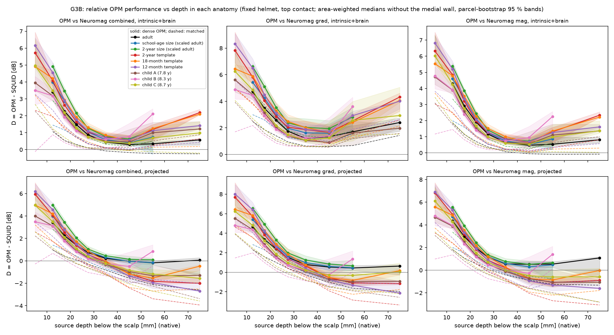
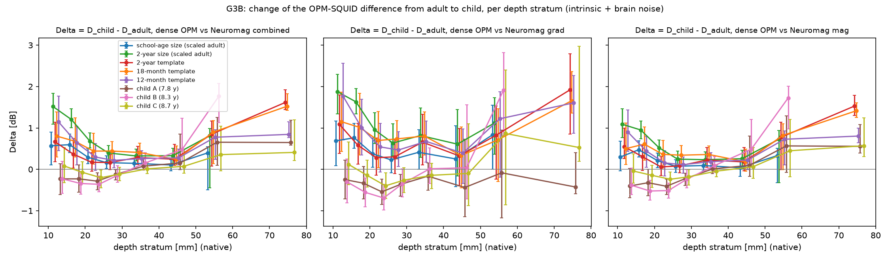
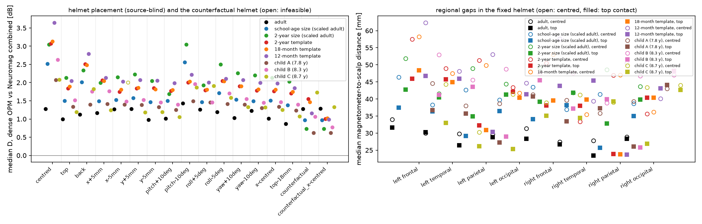
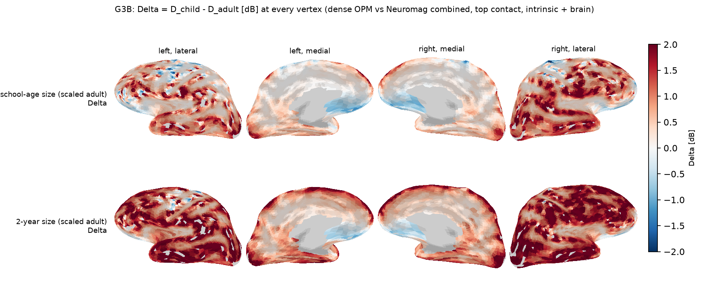
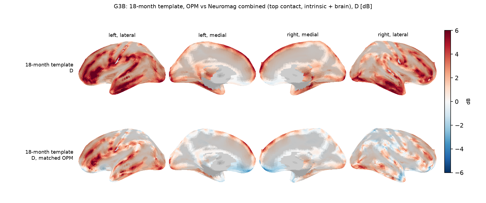
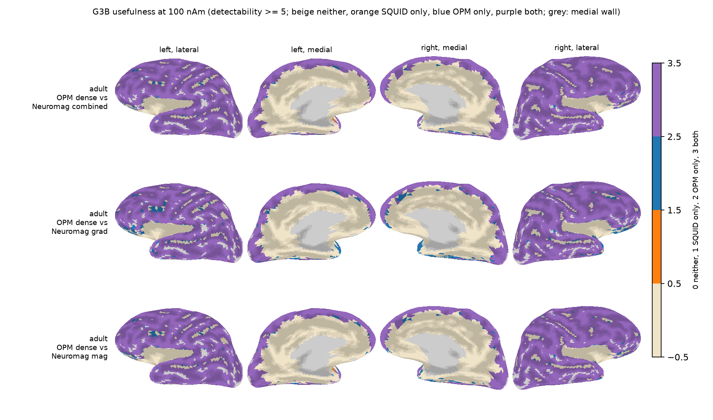
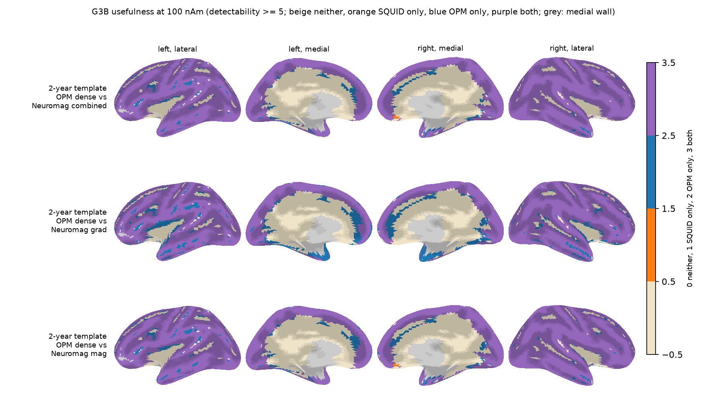
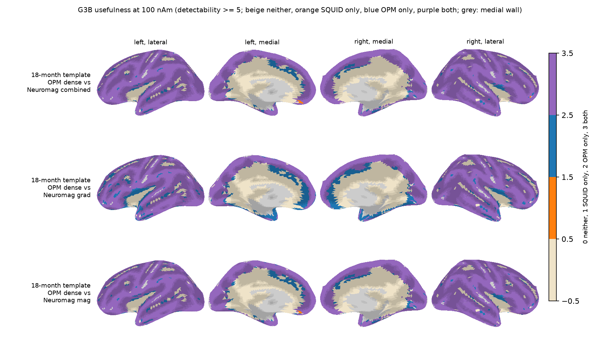
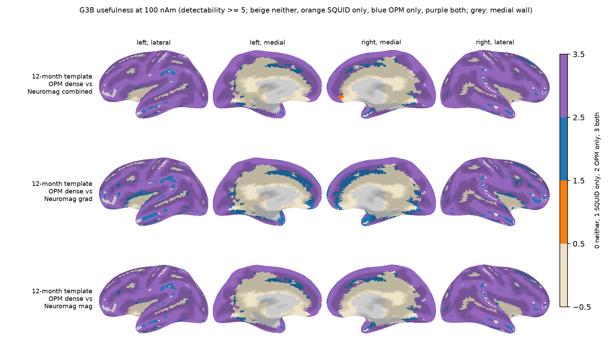

S3. Pediatric extension (G3)
G3A: Jas et al. head-size benchmark REPRO
| Head | h/b [mm] | d_eq at eta 3 [mm] | Normalized d_eq | Printed [%] | Brain volume with OPM ahead |
|---|---|---|---|---|---|
| Infant (newborn) | 55/48 | 30.8 | 49.6 % | 50.0 | 87.2 % |
| Infant (1-yr) | 70/62 | 29.0 | 33.9 % | - | 71.2 % |
| Child (8-yr) | 85/73 | 28.1 | 22.0 % | - | 52.6 % |
| Adult | 95/80 | 27.7 | 15.8 % | 15.0 | 40.4 % |

G3B: fixed adult helmet vs head-adaptive OPM NEW
The same Neuromag helmet (sensors, coil types and intrinsic noise unchanged) holds the adult, two size-only controls (the adult scaled to school-age and to 2-year head size; every vertex homologous to the adult's), the 24-, 18- and 12-month infant templates of O'Reilly et al. (2021), built from the Neurodevelopmental MRI Database (Richards et al. 2016), in their native dimensions and three school-aged children (OpenNeuro ds005234 v2.2.0, doi:10.18112/openneuro.ds005234.v2.2.0; Fadeev et al. 2024, J Neurodev Disord 16(1):67; their own cortex and scalp, a modelled skull, fiducials transferred from the adult), at placements chosen from the scalp and helmet geometry only (primary: raised to 20-mm contact with the top of the helmet). The OPM arrays are refitted to each head with the adult rules (10-mm cell, 17-mm packing, nothing shrunk). Brain-background variance per unit cortical area, room field and intrinsic noise are the adult's. D = OPM minus Neuromag known-topography detectability in dB; Delta = Dchild - Dadult on homologous sources (vertex-wise for the scaled controls; parcels and depth strata for the templates and the school-aged children). A positive Delta is a relative gain for OPM, not by itself an OPM advantage in the child. Methods: section 10 of the methods; full tables in the G3B report.
| Anatomy | Construction | Head circumference [mm] | Breadth x length [mm] | Targets | Usable cortex [cm2] | OPM dense / matched sites | Neuromag gap centred / top [mm] |
|---|---|---|---|---|---|---|---|
| adult (sample subject) | MNE sample subject (as G2) | 586 | 171 x 211 | 7,661 | 1878 | 208 / 98 | 29.8 / 28.4 |
| school-age size (scaled adult) | adult x 85/95 (Jas Table 1 child/adult head radius): 0.8947 | 525 | 153 x 189 | 7,507 | 1470 | 174 / 89 | 41.3 / 34.1 |
| 2-year size (scaled adult) | adult x template/adult occipitofrontal circumference: 0.8442 | 495 | 144 x 178 | 7,413 | 1290 | 155 / 90 | 46.9 / 39.1 |
| 2-year template | 2-year template (ANTS2-0Years3T), native dimensions | 495 | 140 x 175 | 8,134 | 1062 | 151 / 83 | 47.3 / 38.5 |
| 18-month template | 18-month template (ANTS18-0Months3T), native dimensions | 491 | 137 x 172 | 7,994 | 975 | 157 / 80 | 46.0 / 38.9 |
| 12-month template | 12-month template (ANTS12-0Months3T), native dimensions | 469 | 133 x 164 | 8,088 | 895 | 144 / 82 | 48.9 / 40.4 |
| child A (7.8 y) | child A (7.8 y) (sub-Z213), individual MRI, modelled skull | 520 | 154 x 177 | 7,618 | 1852 | 155 / 90 | 40.2 / 35.2 |
| child B (8.3 y) | child B (8.3 y) (sub-Z209), individual MRI, modelled skull | 486 | 141 x 174 | 7,428 | 1666 | 153 / 85 | 47.3 / 38.4 |
| child C (8.7 y) | child C (8.7 y) (sub-Z226), individual MRI, modelled skull | 535 | 161 x 185 | 7,947 | 1869 | 167 / 91 | 41.3 / 32.6 |

| Child anatomy | Comparator | D child [dB] | D adult [dB] | Delta [dB] |
|---|---|---|---|---|
| school-age size (scaled adult) | Neuromag combined | +1.50 [+1.28, +1.75] | +1.00 [+0.82, +1.17] | +0.44 [+0.34, +0.56] |
| school-age size (scaled adult) | Neuromag gradiometers | +3.00 [+2.68, +3.30] | +2.23 [+2.03, +2.45] | +0.65 [+0.51, +0.80] |
| school-age size (scaled adult) | Neuromag magnetometers | +1.81 [+1.55, +2.12] | +1.39 [+1.18, +1.61] | +0.41 [+0.32, +0.51] |
| 2-year size (scaled adult) | Neuromag combined | +2.13 [+1.83, +2.44] | +1.00 [+0.84, +1.18] | +1.07 [+0.91, +1.18] |
| 2-year size (scaled adult) | Neuromag gradiometers | +3.83 [+3.48, +4.14] | +2.23 [+2.02, +2.44] | +1.49 [+1.31, +1.67] |
| 2-year size (scaled adult) | Neuromag magnetometers | +2.41 [+2.07, +2.71] | +1.39 [+1.17, +1.60] | +0.96 [+0.82, +1.10] |
| 2-year template | Neuromag combined | +1.84 [+1.52, +2.19] | +1.00 [+0.83, +1.18] | +0.73 [+0.46, +0.98] |
| 2-year template | Neuromag gradiometers | +3.33 [+2.90, +3.75] | +2.23 [+2.00, +2.45] | +1.13 [+0.77, +1.55] |
| 2-year template | Neuromag magnetometers | +2.23 [+1.91, +2.57] | +1.39 [+1.20, +1.61] | +0.82 [+0.55, +0.93] |
| 18-month template | Neuromag combined | +1.89 [+1.61, +2.21] | +1.00 [+0.83, +1.18] | +0.88 [+0.54, +1.05] |
| 18-month template | Neuromag gradiometers | +3.38 [+2.93, +3.84] | +2.23 [+2.02, +2.45] | +1.26 [+0.77, +1.75] |
| 18-month template | Neuromag magnetometers | +2.24 [+1.93, +2.60] | +1.39 [+1.16, +1.61] | +0.72 [+0.55, +1.04] |
| 12-month template | Neuromag combined | +2.04 [+1.64, +2.43] | +1.00 [+0.83, +1.18] | +0.96 [+0.61, +1.51] |
| 12-month template | Neuromag gradiometers | +3.65 [+3.21, +4.23] | +2.23 [+2.01, +2.45] | +1.33 [+0.82, +2.18] |
| 12-month template | Neuromag magnetometers | +2.45 [+2.00, +2.84] | +1.39 [+1.19, +1.59] | +0.98 [+0.68, +1.47] |
| child A (7.8 y) | Neuromag combined | +1.34 [+1.09, +1.59] | +1.00 [+0.83, +1.19] | +0.30 [+0.11, +0.38] |
| child A (7.8 y) | Neuromag gradiometers | +2.34 [+2.02, +2.72] | +2.23 [+2.04, +2.45] | +0.18 [+0.04, +0.28] |
| child A (7.8 y) | Neuromag magnetometers | +1.71 [+1.44, +1.99] | +1.39 [+1.19, +1.59] | +0.33 [+0.14, +0.37] |
| child B (8.3 y) | Neuromag combined | +1.51 [+1.23, +1.79] | +1.00 [+0.82, +1.18] | +0.41 [+0.28, +0.54] |
| child B (8.3 y) | Neuromag gradiometers | +2.59 [+2.18, +2.95] | +2.23 [+2.03, +2.45] | +0.34 [+0.26, +0.53] |
| child B (8.3 y) | Neuromag magnetometers | +1.93 [+1.62, +2.21] | +1.39 [+1.18, +1.59] | +0.50 [+0.29, +0.66] |
| child C (8.7 y) | Neuromag combined | +1.19 [+0.96, +1.39] | +1.00 [+0.82, +1.18] | +0.17 [-0.07, +0.34] |
| child C (8.7 y) | Neuromag gradiometers | +2.30 [+1.99, +2.64] | +2.23 [+2.03, +2.45] | +0.11 [-0.00, +0.32] |
| child C (8.7 y) | Neuromag magnetometers | +1.55 [+1.26, +1.79] | +1.39 [+1.17, +1.61] | +0.25 [-0.14, +0.37] |











